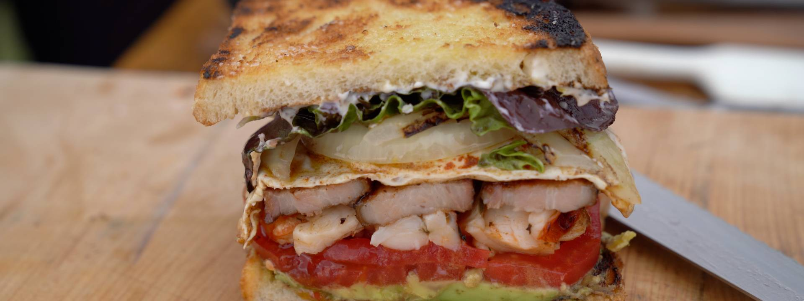

Gordon Ramsay's Maine Lobster BLT

Ingredients
Seaweed Butter
- 1/2 cup unsalted butter
- 2 tbsp. edible seaweed, rehydrated and chopped
- 2 tbsp. tarragon leaves, finely chopped
- zest of 1 lemon
- 1 tsp. minced garlic
- 1 tsp. smoked paprika
- 1/4 tsp salt
Maine BLT
- 4 slices extra thick-cut bacon
- seaweed butter
- kosher salt
- freshly cracked pepper
- unsalted butter
- 2 eggs
- smoked paprika
- 1 whole lobster, blanched and meat removed in-tact
- 1/2 avocado, pit removed
- 1 yellow onion, sliced into 1/2 rounds
- 2 slices artisanal bread
- 1 tbsp. mayonnaise
- 2 tspn. fresh or rehydrated dulse seaweed, squeezed dry then finely chopped
- 1 lemon, for zesting
- 1 large heirloom tomato, sliced into 1/2-inch rounds
- baby gem lettuce leaves
Cooking Instructions
- Make the seaweed butter
- Heat a grill pan. Season the bacon. Cook bacon. Lower heat. Render bacon.
- Heat up a skillet. Add some butter and melt it. Get it to foam, crack eggs into skillet. Season the contents of said skillet. Lower the heat and let eggs fry slowly. Remove from heat when cooked.
- Remove bacon from grill once it's cripsy. Set aside on tray.
- Score lobster tail to prevent it from curling up while cooking. Repeat with any large pieces of lobster meat.
- Add seaweed butter to hot skillet, followed by lobster meat. Saute lobster, coating the pieces in the butter
- Grill that avo
- Coat onion rounds in oil. Do NOT let them break up into rings. Place directly onto the grill pan
- Brush the bread with olive oil on both sides and saeadn with salt. Add bread to grill pan and toast. Remove all items from grill once toasted.
- Remove lobster from pan. Transfer to tray with bacon. Pur leftover butter and cooking juices ontop of lobster and bacon slices.
- Zest the mayo and seaweed with half the lemon. Combine that shit. Season the tomato slices with salt and olive oil, then scoop that grilled avo from it's skin. Smash that avo over one slice of bread, then lay 2-3 sliced tomatoes over that avo.
- Slice lobster tail lengthwise into 3 strips. Lay across tomatoes. Slice te claws in half then tuck those into empty spaces on top of tomatoes. Fill in any other empty spaces with any remaining meat.
- Spread mayo onto the other toast. Rub a few lettuce leaves in the leftover pan juices from the lobster before placing on top of the mayo. Top with a few rings of grilled onion.
- Place bacon strips on top of lobster, then carefully slide the fried eggs from pan on top of bacon. Carefully flip the toast with lettuce and onions onto thefried eggs to complete. Use a sharp brad knife to slice in half and serve immediately.